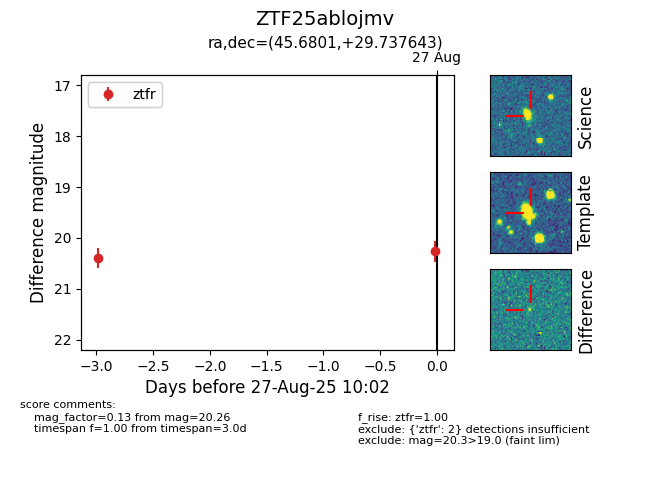

Target ZTF25ablojmv at 2025-08-27 10:02, see:
FINK: fink-portal.org/ZTF25ablojmv
Lasair: lasair-ztf.lsst.ac.uk/objects/ZTF25ablojmv
ALeRCE: alerce.online/object/ZTF25ablojmv
alt names
ZTF25ablojmv (ztf,fink)
coordinates:
equatorial (ra, dec) = (45.6801,+29.73764)
galactic (l, b) = (154.2274,-25.03946)
photometry
last ztfr=20.26
2 ztfr detections
